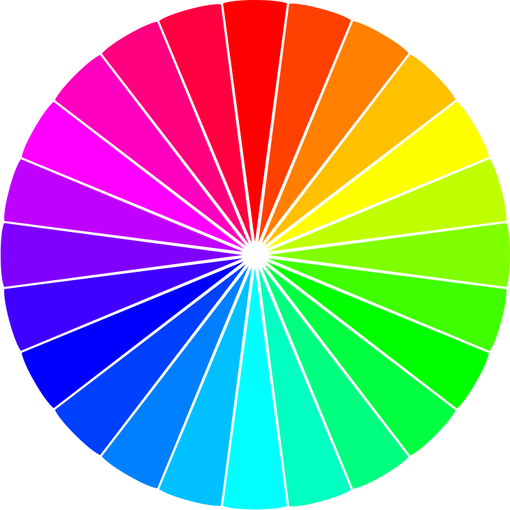
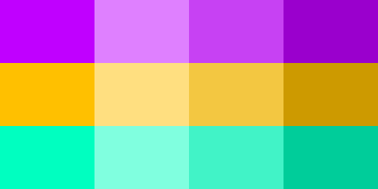

If you haven't yet, check out How To Make A Color Scheme, Part 1, which explains 4-color schemes. Here's how to create a 3- or 2-color scheme.
First decide on one of 3 color schemes: triadic (3 balanced colors), split complementary (a stand-out color counter-balanced by two similar ones), or complementary (simple contrast).
Triadic
Click to rotate

For a triadic scheme, use colors 120 and 240 degrees from the starting color. Burger King, Best Western and Fanta soft drink uses this scheme.
Split-Complementary
Click to rotate
For a split complementary scheme, use colors 150 and 210 degrees from the starting color. Taco Bell uses this scheme.
Complementary
Click to rotate
Complementary schemes use colors 180 degrees apart. A very popular scheme for logos. Chilli's, FedEx, Mozilla Firefox and Mountain Dew are a few examples.
Save your colors
Use your favorite color picker to save your color choices. I use Sketch 3.
Tint, tone, or shade
Finally, personalize the color palette by playing with tints (white transparencies), tones (gray transparencies) and shades (black transparencies).
This triadic color scheme shown (l-r): plain, covered in white at 50% opacity, plain, covered in gray at 30% opacity, and covered in black at 20% opacity.